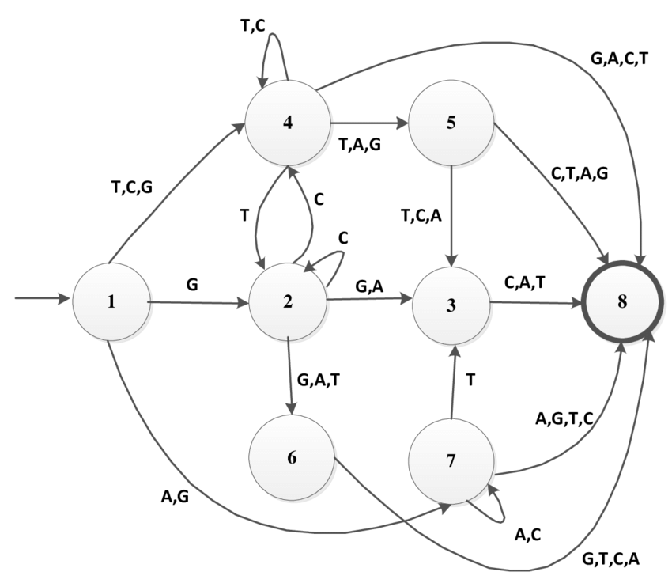

| Benjamin Michalowicz |
|
|
Ookami/A64FX Research
My M.S. Research focused on the A64FX Processor and its behavior in High-Performance Computing. I was tasked with helping run acceptance tests on the Ookami Cluster at Stony Brook University just after it had finished being installed, and I had the great fortune of being able to work on the Fugaku Supercomputer, analyzing OpenMP and MPI libraries and their behavior as well as examine several compiler toolchains and their abilities to optimize runtime, performance, and general efficiency of applications.
ChorDNS Course Project
My graduate networks course consisted of me working with three fellow students to implement and test the Chord Distributed Hash table for efficient lookup protocols. Using DistAlgo, based in Python, we created a testing environment of approximately 100,000 DNS records (A, MX, and NS), and tested queries of our pre-defined table against that of Linux's "Dig" command, which taps into the current DNS tree-like hierarchy. A distributed table lookup effectively proves to be more efficient and has less risk of containing a single point of failure.
Topologic
A project made to simulate Deterministic Finite Automata (DFA) using context switching. It provides a way to build and define the bahavior of a graph, with the client being able to define each vertex's function and determine how the graph transitions from one state to another, or one to many states. In the process, we are working on creating wrappers for different languages through the use of SWIG and other language's wrapping capabilities, such as Python, Rust, C#, and C++
Gerrymender
My capstone project, I worked with two fellow students to create an application to fix the error of political gerrymandering by maximizing the number of Majority/Minority Districts. I took the role of preprocessing the data and designing the database tables extensively using Python's pandas and geopandas library, MySQL, and helping connect it to the front end.

